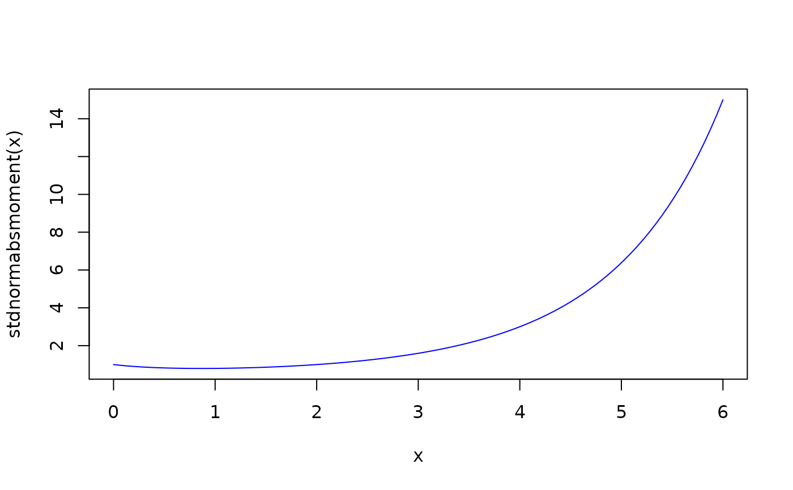

stdnormmoment.RdCompute moments and absolute moments of standardised-t and normal distributions.
stdnormmoment(k) stdnormabsmoment(k) stdtmoment(nu, k) stdtabsmoment(nu, k) tabsmoment(nu, k)
| k | numeric vector, moments to compute. |
|---|---|
| nu | a number, degrees of freedom. |
These functions compute moments of standardised-t and standard normal distibutions. These distributions have mean zero and variance 1. Standardised-t is often prefferred over Student-t for innovation distributions, since its variance doesn't depend on its parameter (degrees of freedom).
The names of the functions start with an abbreviated name of the
distribution concerned: stdnorm (N(0,1)), stdt
(standardised-t), t (Student-t).
The functions with names ending in absmoment()
(stdnormabsmoment(), stdtabsmoment() and tabsmoment())
compute absolute moments, The rest (stdnormmoment() and
stdtmoment()) compute ordinary moments.
The absolute moments are valid for (at least) k >= 0, not
necessarily integer. The ordinary moments are currently intended only
for integer moments and return NaN's for fractional ones, with
warnings.
Note that the Student-t and standardised-t with \(\nu\) degrees of freedom have finite (absolute) moments only for \(k<\nu\). As a consequence, standardised-t is defined only for \(\nu>2\) (otherwise the variance is infinite).
stdtabsmoment returns Inf for any \(k \ge \nu\).
stdtmoment returns Inf for even integer k's, such
that \(k \ge \nu\). However, for odd integers it returns
zero and for non-integer moments it returns NaN.
Here is an example, where the first two k's are smaller than
nu, while the others are not:
stdtabsmoment(nu = 5, k = c(4, 4.5, 5, 5.5)) ##: [1] 9.00000 29.31405 Inf Inf stdtmoment(nu = 5, k = c(4, 4.5, 5, 5.5)) ##: [1] 9 NaN 0 NaN
These functions are designed to work with scalar nu but this
is not enforced.
numeric vector of the same length as k.
Würtz D, Chalabi Y, Luksan L (2006). “Parameter Estimation of ARMA Models with GARCH / APARCH Errors An R and SPlus Software Implementation.” http://www-stat.wharton.upenn.edu/%7Esteele/Courses/956/RResources/GarchAndR/WurtzEtAlGarch.pdf.
Georgi N. Boshnakov
## some familiar positive integer moments stdnormmoment(1:6)#> [1] 0 1 0 3 0 15#> [1] 0 NaN 1 NaN 0 NaN 3 NaN 0 NaN 15## abs moments don't need to be integer curve(stdnormabsmoment, from = 0, to = 6, type = "l", col = "blue")## standardised-t stdtmoment(5, 1:6)#> [1] 0 1 0 9 0 Infstdtabsmoment(5, 1:6)#> [1] 0.7351052 1.0000000 2.2053156 9.0000000 Inf Infstdtabsmoment(5, 1:6)#> [1] 0.7351052 1.0000000 2.2053156 9.0000000 Inf Inf## Student-t tabsmoment(5, 1:6)#> [1] 0.9490167 1.6666667 4.7450836 25.0000000 Inf Inf